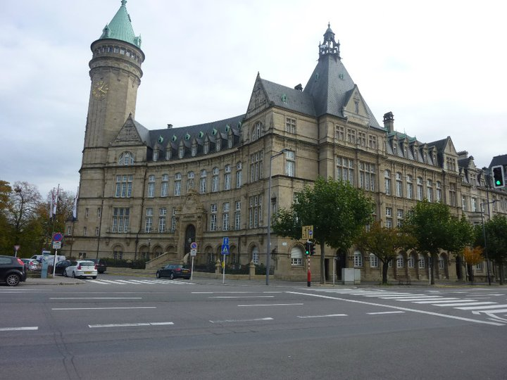
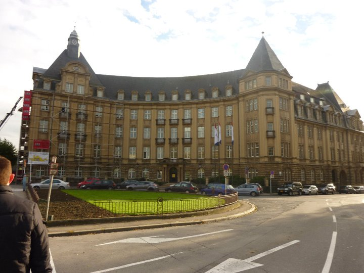
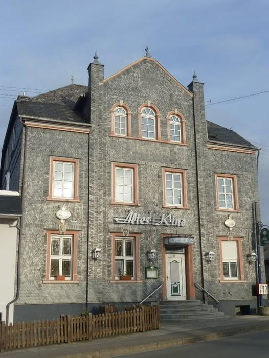
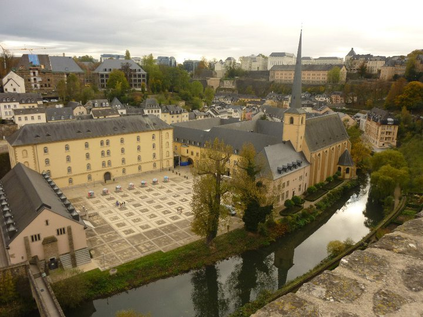
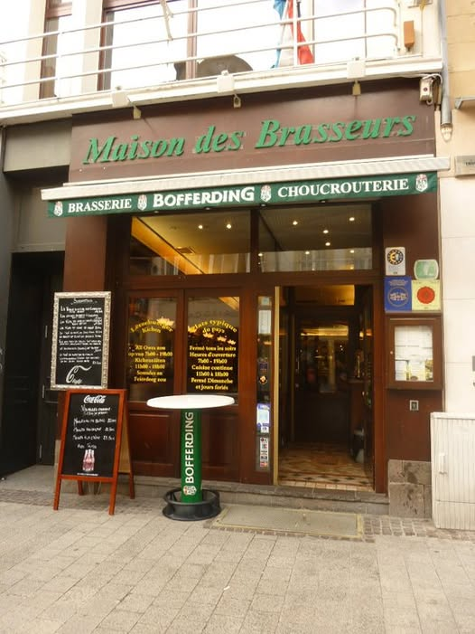
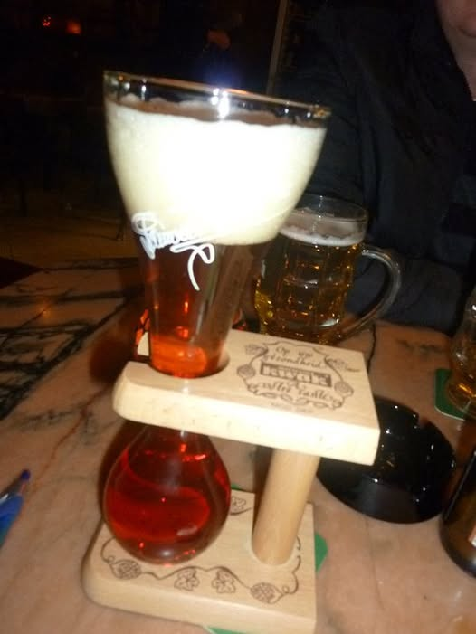

We flew into Luxembourg from Dublin in 2010 expecting a pleasant but unremarkable city break. What we got was one of the most visually stunning and historically rich small capitals in Europe — a place that packs an extraordinary amount into a very compact space. Dramatic fortifications carved into cliff faces, a gorgeous lower town in the river valley below, a beautiful grand ducal palace and a bar scene that kept us very happily occupied for several evenings. Luxembourg is criminally underrated as a city break destination and we'd go back in a heartbeat.
We flew direct from Dublin to Luxembourg Airport — one of the easiest city break journeys you can do from Ireland, barely two hours in the air and you're practically in the old town before you've finished your in-flight coffee. We spent a few nights there in 2010 and between a city tour, plenty of wandering and a very thorough exploration of the local bar scene, we felt like we got a proper feel for the place.
Luxembourg City sits dramatically on a plateau with deep river valleys on three sides — the Alzette and Pétrusse rivers carve their way around the rock below, giving the city its extraordinary vertical character. Standing on the Chemin de la Corniche — dubbed the most beautiful balcony in Europe — and looking out across the Grund and the fortification towers rising from the cliffs is genuinely one of the great urban views in Europe.
The city does something that very few European capitals manage — it is simultaneously ancient and thoroughly modern, multilingual and cosmopolitan (Luxembourg has three official languages — Luxembourgish, French and German — plus half the population speaks English), and yet it retains a sense of human scale and warmth that bigger capitals often lose. It is a place that invites you to slow down and explore on foot.


A network of underground tunnels and galleries carved into the sandstone cliffs — part of the city's extraordinary UNESCO-listed fortifications. The views from the top over the Alzette valley and the Grund below are breathtaking.
The valley quarter below the old town — accessible by lift or by winding paths and staircases. Full of restaurants, bars and café terraces along the river, with dramatic views up to the fortifications towering above. One of the loveliest neighbourhoods in the Benelux.
The official residence of the Grand Duke of Luxembourg sits right in the middle of the old town. An ornate Renaissance building that looks almost impossibly grand for such a small country — a reminder that Luxembourg punches well above its weight in every respect.
The lively main square of Luxembourg City — lined with café terraces, surrounded by beautiful architecture and full of locals and visitors enjoying the atmosphere. The perfect place to sit with a coffee or a beer and watch the city go by.
The iconic bridge crossing the Pétrusse valley — a stunning piece of early 20th century engineering with beautiful arches that frame the valley below. The views from either end of the bridge are some of the best in the city.
Luxembourg has a surprisingly lively and cosmopolitan bar scene — a multilingual, international crowd, good local beers and wines, and bars ranging from traditional to very modern. We gave it a thorough examination and can confirm it stands up very well.




Luxembourg is brilliantly positioned for wider Benelux or Rhine Valley tours — combining it with Belgium, the Netherlands or Germany makes for a fantastic multi-country trip. TourRadar has excellent options covering the region.
Disclosure: Affiliate link — if you book through it we may earn a small commission at no extra cost to you.
Great deals on hotels across Luxembourg City — from the old town to the Kirchberg European quarter.
Disclosure: If you book through these links we may earn a small commission at no extra cost to you.
City walking tours, Casemates visits, Grund quarter tours, day trips to the Ardennes and more.
Disclosure: If you book through these links we may earn a small commission at no extra cost to you.
Common questions
What to pack for Luxembourg
Luxembourg is a walkable city but the terrain is hilly — you'll be going up and down a lot between the old town and the Grund. Comfortable shoes are essential. The weather is temperate but changeable so layers are always useful.
Luxembourg's old town and the steep paths to the Grund will test your footwear — good supportive shoes are a must.
View on Amazon →Luxembourg weather is changeable — a light jacket keeps you comfortable whatever the day throws at you, especially on the exposed Corniche viewpoint.
View on Amazon →Stay connected without roaming charges — useful for maps and navigation around Luxembourg's compact but hilly streets.
View on Amazon →Long days exploring and photographing Luxembourg's extraordinary scenery drain batteries fast — keep yours topped up.
View on Amazon →Luxembourg uses Type F plugs — the same as most of continental Europe but different to Ireland. Don't get caught out.
View on Amazon →Perfect for city days and the Casemates visit — keeps your essentials organised and hands free as you explore.
View on Amazon →Disclosure: These are Amazon affiliate links. If you buy through them we may earn a small commission at no extra cost to you.
Luxembourg is one of Europe's best kept travel secrets — small enough to explore properly in a few days, beautiful enough to keep you staring at your photos for years afterwards. Fly direct from Dublin, walk the Corniche, descend to the Grund and raise a glass in one of the city's excellent bars. You'll wonder why you didn't go sooner.
Affiliate disclosure: if you book through our links we may earn a small commission at no cost to you. We only recommend trips and experiences we'd be happy to stand over.